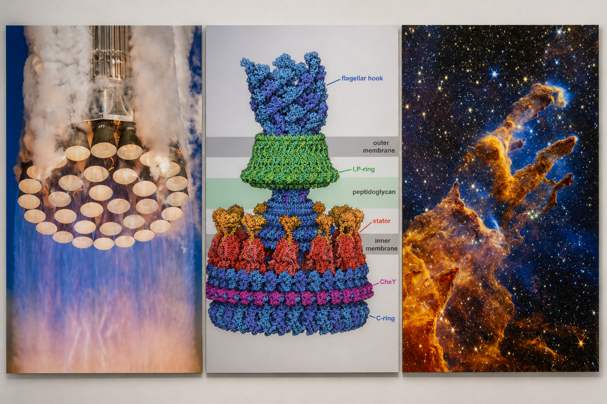
This is a basic one-page website. It demonstrates a minimal structure with an image and descriptive paragraph. This setup is sufficient for static deployment using GitHub Pages.
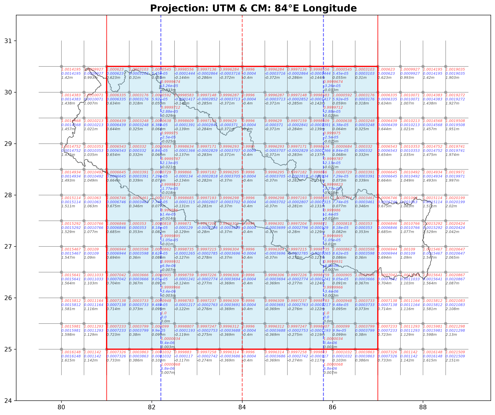
Customized UTM Zone, central meridain at 84deg E longitude. Six degree width. Observe the pattern of distortion factor. Note that six degree width zone with 84deg E longitude as central meridian doesnt completley cover the entire Nepal region. Note the west part and east part of Nepal beyond UTM zone shown in above figure.
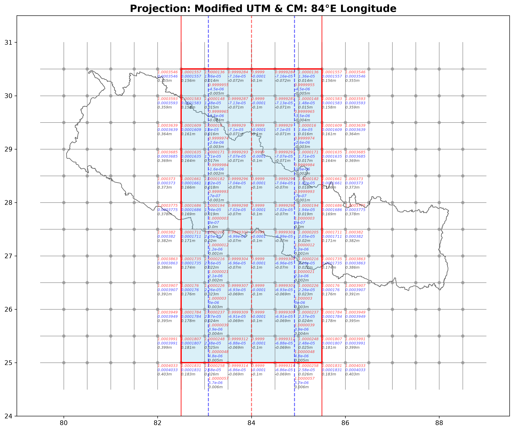
Modified UTM. 6deg longitudinal width to 3deg longitudinal width. The scale factor at central meridian is 0.9999. The distortion pattern is shown in Fig 2 above. Meditate on it. The intent is to minimize the distortion compared to UTM zone.
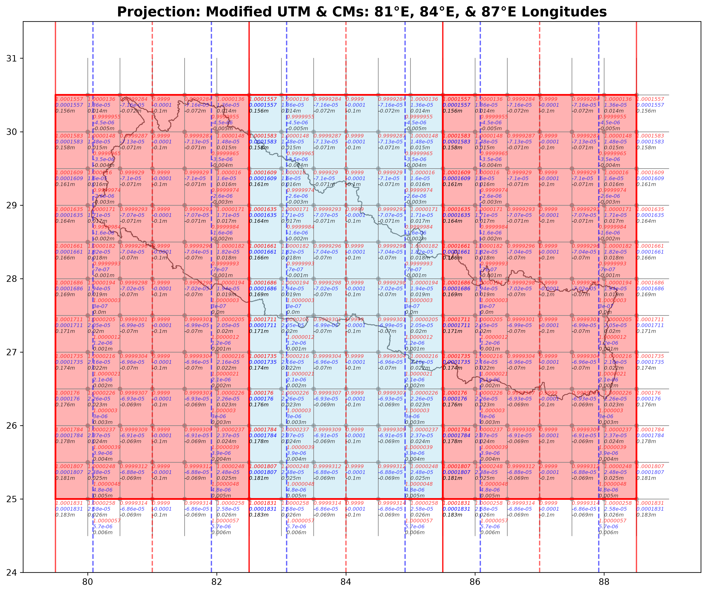
Modified UTM. 3 such zone is required to cover entire Nepal. As Modified UTM provides minimal distortion compared to UTM, why not use 3 separate MUTM zones for survyeing and mapping purpose in Nepal region.
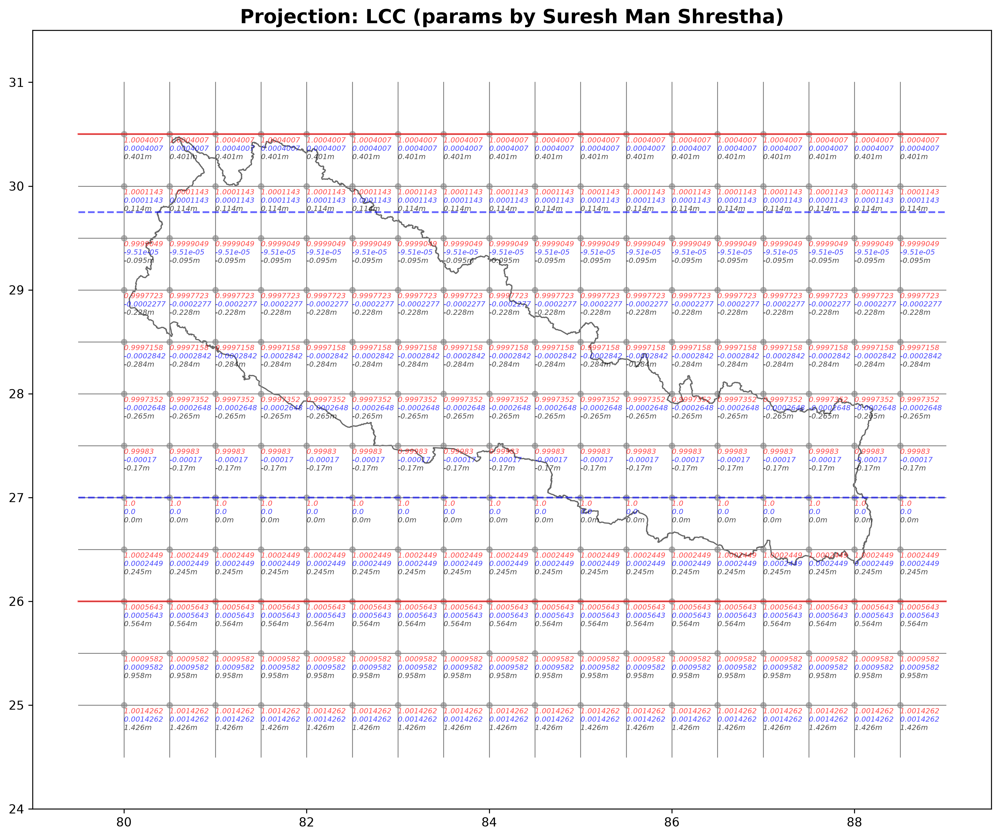
Conical projection. Lambert Conformal Conical (LCC) projection. The location of standard parallel is according to Suresh Man Shrestha (SMS) designed /developed parameters. The location of SP is key to distortion factor and pattern.
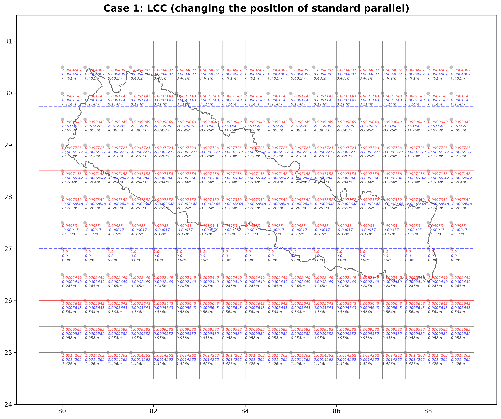
LCC. The key parameter to distortion and its pattern is the location of SP. What if we change the SP than SMS location. Would we achieve minimal distortion? inspect Fig 4 above and compare with Fig 4.
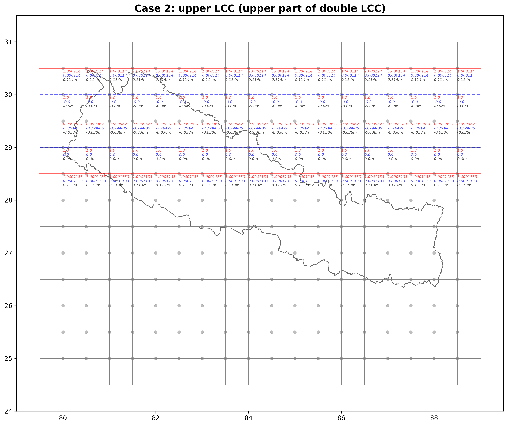
LCC. What if we split in half the north-south extent of Nepal: upper part and lower part. Lets develop separate LCC for both halves. Upper LCC: now SPs are closer, results better scale factor. Compare it with single LCC shown in Fig 4.
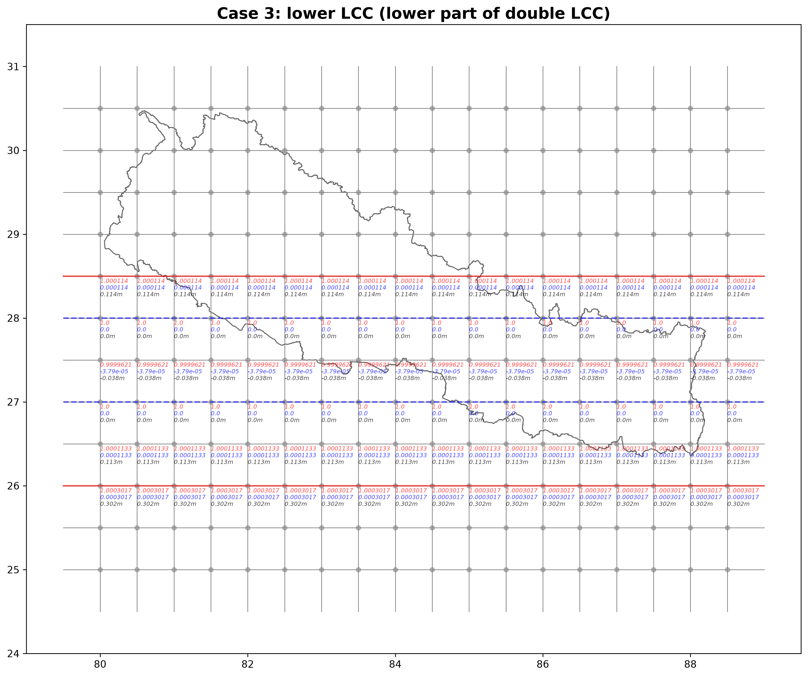
LCC. Lower LCC, lcc applied lower half of Nepal. It is exactly similar to upper LCC. Compare it with single LCC shown in Fig 4.
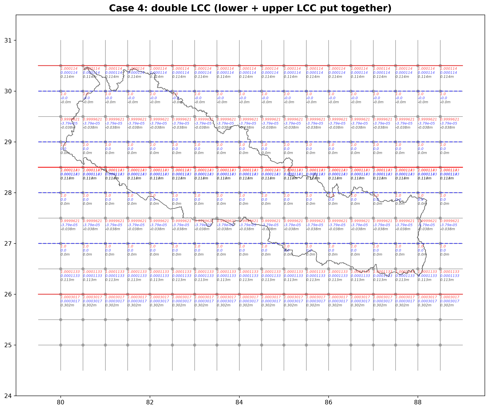
LCC. Both upper and lower LCC put together. There is overlapping (or gap?) region at dividing line, a parallel that splits north-south extent of Nepal into two-half. In this analysis, the diviing line is 28degN latitude parallel. Is it better to adopt double LCC compared to single LCC, what do you think?
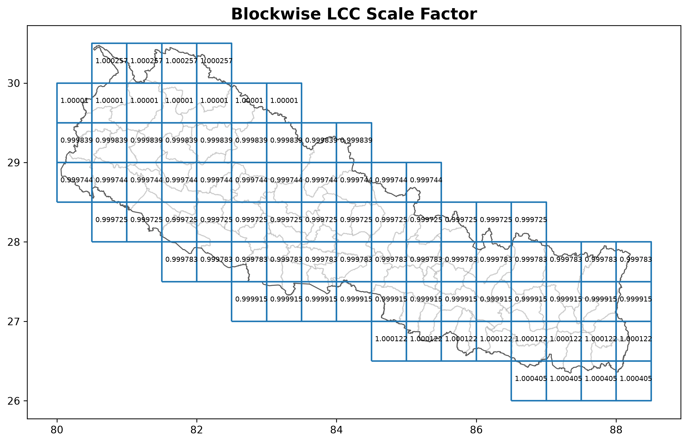
The blockwise scale factor. Why? The distortion factor varies at every point. What scale factor will i apply for length /distance (Line scale factor!!!). If scale factor varies at every point, then what scale factor (a single scale factor) will apply in survey area of my interset? The block is 0.5deg by 0.5deg. The mentioned scale factor is not actual scale factor at centroid or central point of each block. But the line scale factor, that line pass through mid longitude of each block. (equation: K = (k1+k2+4km)/6).
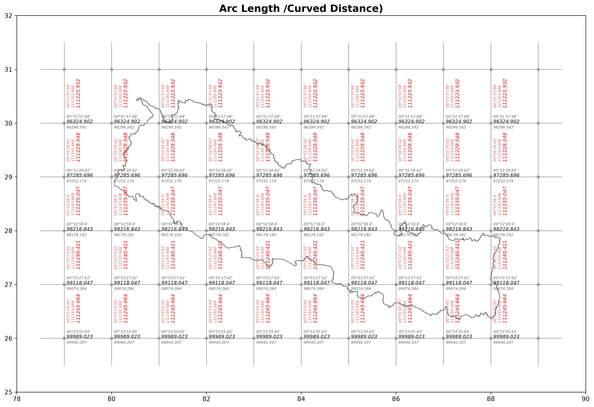
Distortion is introduced invariably, if I want my curved length (arc length) computed over reference ellipsoid and then want equivalent distance in grid plane /paper map. Curved length on WGS84 surface to equivalent length on MUTM plane or LCC plane, this is what projection formula does at the cost of distortion. I want minimal distortion and the convenient. Which projection, MUTM or LCC, does solve my problem?
Trinity: The creation of Oppenheimer, destructive enough to destory the Earth.